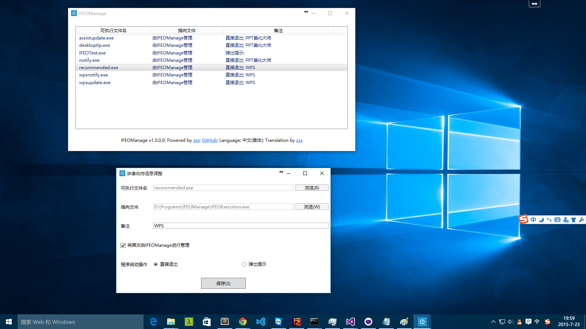
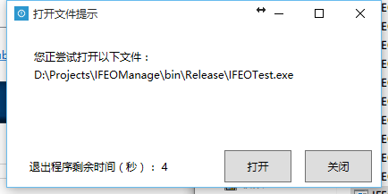

IFEOManage
This is a tool that help you to manage your IFEO(Image File Execution Options) items.
Platform
.NET Framework 4.0 / Visual Studio 2015 Community
What is IFEO?
Image File Execution Options (IFEO) - MSDN Blogs
Why should I use it?
Some softwares, just like Kingsoft WPS Office and PPTAssist, contains some special executable file used to push advertisments in the background. Horribly, these Advertising Programs will run not only after system initialized, but also start each time when Word / PowerPoint / Excel started. This is hooliganism. With the version of the software's update, the path of these files will also change. But they have the same Filename. Because of this, we can block them by the feature of Windows.
In addition, Trojans and viruses like this feature and use it more often. So this tool can also be used as a warning.
Screenshot


License
The MIT License
中文
该工具的意义？
某些软件，如 WPS Office 和 PPT美化大师。其包含会在后台推送广告的程序。更可怕的是，这些 广告软件 不仅会在系统启动后运行，而且当你每次运行 Word / PowerPoint / Excel后，这些软件也会随之启动。这是流氓行为。 随着版本的更新，这些文件的路径也会随之变化。可喜的是，它们的文件名仍然相同。拜其所赐，我们可以利用 Windows 的这项特性对其进行封杀。
另外，一些木马 / 病毒也会经常使用这个特性，这个工具也可以作为警告。